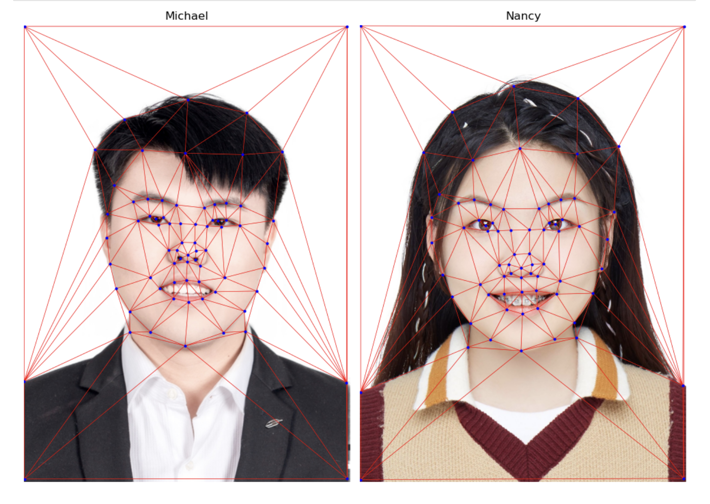
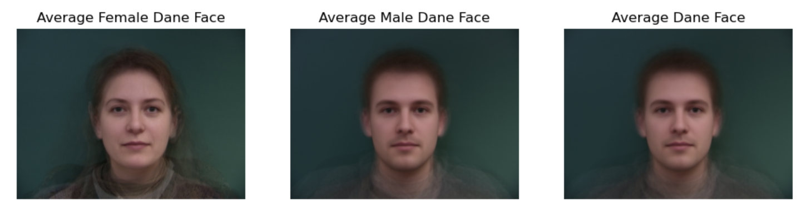

In this project, I did a manual correspondance between images, created a morph and warp of my face into another person's face, computed the average face of a population, and generate a caricature of myself by extrapolating from the population mean. Besides, I also use those techniques to somehow change the gender of my own face.
First, I first label the corresponding points using the correspondance tool provided by last year's student. Secondly, I loaded facial keypoints from json file created by that tool, Thirdly, I computed the midpoint of corresponding keypoints between the two faces. Then, I use Delaunay triangulation on that midpoint. Also I visualized that triangulation on both images. Here is sthe result:
I first cropped my face and my friend Nancy's face to have the same dimenstion and use the key points giving by corresponding tool, I computed an average face shape using the midpoints of corresponding keypoints from both faces. Then, I use Delaunay triangulation, and calculated affine transformations for each triangle in the images and warped them to the average shape. Finally, I did a cross-dissolve to blend two faces to get a midway face. Here is the result:

In Part 2, I created a GIF morph sequence with 45 frames, each with a duration of 30 ms. Since the GIF file was too large to upload to GitHub, I converted it into a YouTube video. You can watch it directly below:
I used the Danes dataset. I first get keypoints from .asf files for male and female images by parsing files. Then after i do this, I firgure out that my final image only has face without background and clothes. So I added extra points, specifically, I added points in the corners and boundaries. Then I computed the average face shape for all, male, and female keypoints separately. In detail, for each image, I used Delaunay triangulation to warp the face into the average shape by applying affine transformations to each triangle. Here is four examples:


I computed the average female, male, and Danes faces by warping each image to its average shape, averaging pixel values. Here is the result
Then, I loaded keypoints for me and the average Dane face from a JSON file and warped both faces. I warped Michael's face to the average Dane and also warped the average Dane face to match my face. Here is the result.